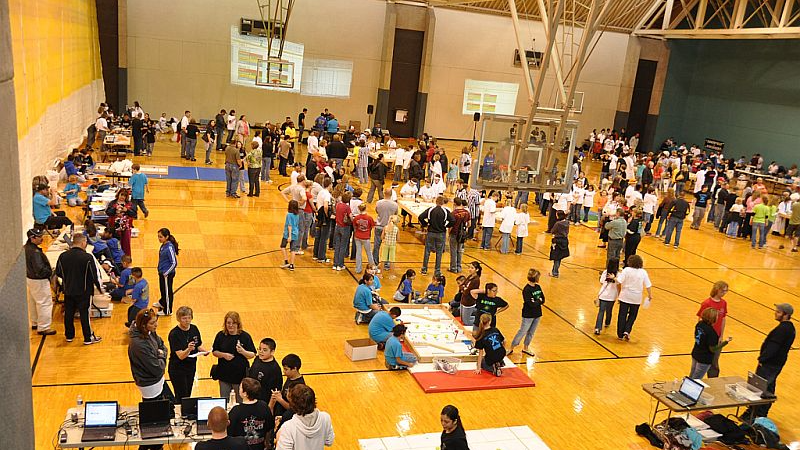
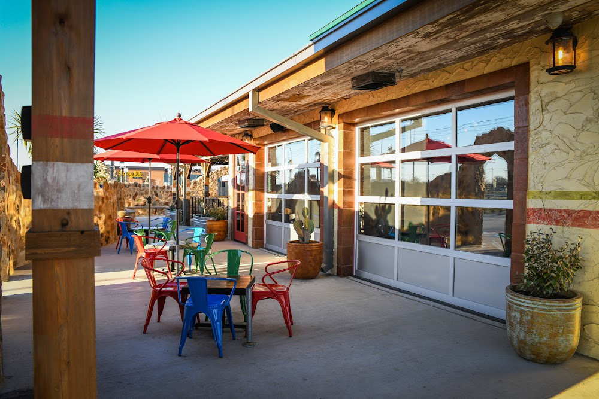

Raider Aerospace Society • Mar 2025 – Present
Avionics Team Lead
Lead Space Raiders avionics for IREC 2025, directing hardware, firmware, and test activities across a 15 person team.
- Managed technical milestones, schedules, and documentation (block diagrams, wiring, justifications).
- Drove integrated hardware/firmware development to competition launch with cross-domain verification.
- Led parachute deployment and aero-braking integration to align with mission profile.

TTU Volunteer • Spring 2025
GEAR RoboRanch Table Referee
Supported a Lego Technic-based robotics competition for upper elementary and middle school students, hosted by Dr. Johnston and Dr. Karp at Texas Tech.
- Refereed table runs, scored challenges, and ensured consistent rule application across age groups.
- Explained rules, resolved conflicts, and kept teams moving during matches.
- Encouraged participants with feedback and praise to maintain a positive, educational environment.

Hospitality • Mar 2023 – Present
Server, Lupe Tortilla
Front-of-house service in a high-volume restaurant, balancing guest experience with fast execution and team coordination.
- Resolved guest issues and clarified expectations under pressure with clear, calm communication.
- Coordinated with kitchen and service staff to keep orders accurate and on schedule during peak hours.
- Managed multiple tables while maintaining service quality and a positive, welcoming atmosphere.